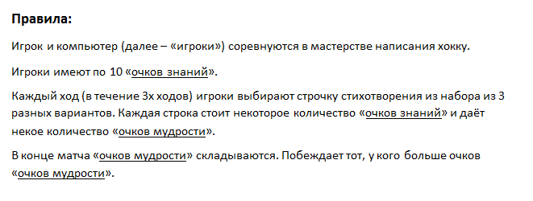
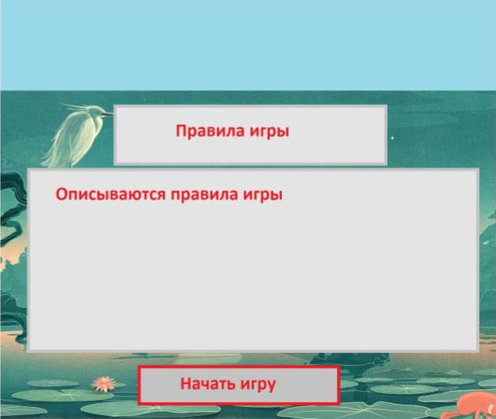
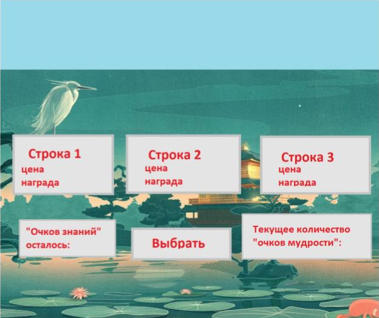
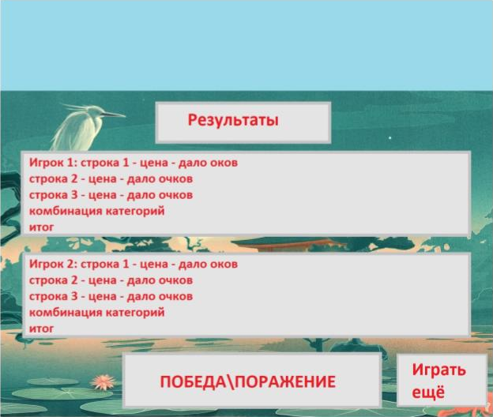

Добро пожаловать!
Предмет: Интернет-технологии
Группа: ИДМ-19-01
ФИО: Ильин Илья Игоревич
Лабораторная работа 1
"Экосистема разработки программ с открытым кодом"
Задачи:
- Зарегистрироваться на GitHub.
- Разработать личную страницу-отчет.
- Использовать GitHub, как хостинг.
Выполненные работы:
- Создана страница пользователя на GitHub.
- Разработана личная страница-отчет.
- Странца выгружена в репозиторий на GitHub.


Лабораторная работа 2
"Разработка простого веб-приложения"
Задачи:
- Сформировать команду для разработки проекта.
- Определить роли команды.
- Разработать прототип приложения.
Выполненные работы:
- Была сформирована команда из трех человек:
- Аржанников Дмитрий - СП, АД, ПП.
- Ильин Илья - СП, КО, ПП.
- Сурков Павел - РП, СП, НИ, БА.
- Коллективным решением было назвать команду "Chemical Society".
- Команда разработала прототип браузерной игры "Битва хокку".
- Были разработаны правила: 
- Был разработан пример интерфейса: 


Лабораторная работа 3
"Настройка локальной сети передачи данных"
Расчет диапазонов подсетей.
| - | Lan A | Lan B | Lan C |
|---|---|---|---|
| Кол-во узлов | 12 | 457 | 78 |
| Subnet | 192.168.3.0 | 172.16.3.0 | 10.10.3.0 |
| Mask | 255.255.255.240 | 255.255.254.0 | 255.255.255.128 |
| Broadcast | 192.168.3.15 | 172.16.4.255 | 10.10.3.127 |
-
Разместить на рабочем поле коммутатор и два компьютера и соединить их.

-
Добавить на рабочее поле еще один коммутатор с двумя компьютерами и настроить адресацию из другой подсети.

-
Соединить коммутаторы между собой и проверить работоспособность сети (Не работает, так как коммутаторы подсоединяются только к маршрутизаторам).

-
Добавить маршрутизатор на рабочее поле.

-
Добавить на рабочее поле еще один маршрутизатор. Подключить к нему коммутатор и компьютер.

| Устройство | IP - адрес | Маска | Шлюз |
|---|---|---|---|
| PC0 | 192.168.3.14 | 255.255.255.240 | 192.168.3.1 |
| PC1 | 192.168.3.13 | 255.255.255.240 | 192.168.3.1 |
| PC2 | 172.16.4.254 | 255.255.254.0 | 172.16.3.1 |
| PC3 | 172.16.4.253 | 255.255.254.0 | 172.16.3.1 |
| PC4 | 10.10.3.126 | 255.255.255.128 | 10.10.3.1 |
| R0 0/0 | 192.168.3.1 | 255.255.255.240 | - |
| R0 0/1 | 172.16.3.1 | 255.255.254.0 | - |
| R0 0/2 | 15.15.3.2 | 255.255.255.252 | - |
| R1 0/1 | 10.10.3.1 | 255.255.255.128 | - |
| R1 0/2 | 15.15.3.1 | 255.255.255.252 | - |
Настройка статической маршрутизации производится при помощи команды: ip route [сеть назначения] [маска] [маршрут]
Установить банер на сетевое оборудование: banner motd [баннер]
Проверка работоспособности сети:

Подготовка к экзамену
Задачи:
- Самооценка прохождения теста по инновациям с отражением результата в кондуите.
- Самооценка прохождения теста по управлению проектами (рисками) с отражением результата в кондуите.
- Подготовка мини-конспекта ответа на один из экзаменационных билетов.
Выполненные работы:
- Результат теста "Инновации": 86%
- Результат теста "Проекты": 73%
- Написан ответ на 8 билет:
- рост производительности труда;
- повышение конкурентоспособности компаний;
- снижение издержек производства;
- создание новых рабочих мест;
- преодоление бедности и социального неравенства.
- риск кибер-угроз, связанный с проблемой защиты персональных данных (частично проблема мошенничества может решаться внедрением так называемой цифровой грамотности);
- «цифровое рабство» (использование данных о миллионах людей для управления их поведением);
- рост безработицы на рынке труда, поскольку будет возрастать риск исчезновения некоторых профессий и даже отраслей (например, многие эксперты всерьез полагают, что банковская система в течение ближайших десяти лет исчезнет). Это станет возможным вследствие дальнейшего распространения информационных технологий и ее продуктов, как-то: магазинов с электронными кассами, ботов, обслуживающих клиентов, беспилотных автомобилей и прочего);
- «цифровой разрыв» (разрыв в цифровом образовании, в условиях доступа к цифровым услугам и продуктам, и, как следствие, разрыв в уровне благосостояния людей, находящихся в одной стране или в разных странах)
- должен произойти переход от доминирования индустриального производства к производству услуг (массовый рабочий не нужен);
- научное знание приобретает определяющее значение в процессе реализации технологических нововведений;
- интеллектуальные технологии должны стать ключевым элементом системного анализа и теории принятия решений.
- Возможность создания удобного Web-интерфейса
- Активное взаимодействие с пользователем
- Частичная перезагрузка страницы, вместо полной
- Удобство использования
Вопрос 1. Понятия цифровой экономики, цифрового общества, индустрии 4.0.
Понятие цифровой экономики
Цифровая экономика (digitaleconomy) впервые был употреблен в 1995 году, американским ученым из Массачусетского университета Николасом Негропонте для разъяснения коллегам преимуществ новой экономики в сравнении со старой в связи с интенсивным развитием информационно-коммуникационных технологий.
В утвержденной в России «Стратегии развития информационного общества РФ на 2017-2030 годы» дано следующее определение цифровой экономики: «Цифровая экономика – это хозяйственная деятельность, в которой ключевым фактором производства являются данные в цифровом виде, обработка больших объемов и использование результатов анализа которых по сравнению с традиционными формами хозяйствования позволяют существенно повысить эффективность различных видов производства, технологий, оборудования, хранения, продажи, доставки товаров и услуг».
Благодаря развитию цифровых технологий, потребитель может быстрее получать необходимые ему услуги, экономить, покупая продукты в интернет-магазинах по более низким ценам. Так, электронная версия книги обойдется вам в разы дешевле, чем ее печатный аналог, на оптовой закупке в интернете, договорившись с другими потребителями, вы сэкономите больше, чем делая покупки в оффлайновых торговых точках. В конце концов, потребитель даже может начать свое дело онлайн, стать предпринимателем, не выходя из дома. К другим плюсам развития цифровой экономики относится:
Риски цифровой экономики Внедрение в жизнь «цифры» и электронной коммерции тем не менее несет для человечества и ряд минусов, среди которых
Главные цифровые экономики мира «Цифровыми» странами-лидерами на сегодняшний день являются Норвегия, Швеция и Швейцария. В топ-10 входят США, Великобритания, Дания, Финляндия, Сингапур, Южная Корея и Гонконг.
Понятие цифрового общества
Цифровое общество – общество, в котором большинство работающих занято производством, хранением, переработкой, продажей и обменом информацией. Международные принципы создания информационного общества и подходы к его созданию определены Окинавской хартией глобального информационного общества (2000), Декларацией принципов «Построение информационного общества — глобальная задача в новом тысячелетии» (2003), Планом действий Тунисского обязательства (2005). Введение термина «информационное общество» приписывают профессору Токийского технологического университета Юдзиро Хаяши, который в 1969 г. по заказу правительства Японии опубликовал несколько докладов: «Японское информационное общество: темы и подходы» и «Контуры политики содействия информатизации японского общества». В 1971 г. Токийский технологический университет представил публике доклад «План информационного общества». Американский социолог Д. Белл полагает, что информационное общество как следующая стадия общественного развития может характеризоваться тремя основными критериями:
Понятие индустрии 4.0
Четвёртая промышленная революция (англ.The Fourth Industrial Revolution) —прогнозируемое событие, массовое внедрение киберфизических систем в производство(индустрия 4.0), обслуживание человеческих потребностей, включая быт, труди досуг. Изменения охватят самые разные стороны жизни: рынок труда, жизненную среду, политические системы, технологический уклад, человеческую идентичность и другие. Вызываемая к жизни экономической целесообразностью и привлекательностью повышения качества жизни, четвёртая промышленная революция несёт в себе риски повышения нестабильности и возможного коллапса мировой системы, в связи с чем её наступление воспринимается как вызов, на который человечеству предстоит ответить.
Терминология:
Цифровое производство—интегрированная компьютерная система, включающая в себя средства численного моделирования, трехмерной (3D) визуализации, инженерного анализа и совместной работы, предназначенные для разработки конструкции изделий и технологических процессов их изготовления. Цифровое производство начиналось с таких инициатив, как конструирование с учетом технологичности (DFM), компьютерно-интегрированное производство (CIM), гибкое производство, бережливое производство и других, направленных на расширение совместной работы при конструкторско-технологической подготовке производства изделий.
Вопрос 2. Технологии асинхронного обмена данными в среде браузера.
При передаче данных отдельными байтами осуществляется только побитовая синхронизация, синхронизация по кадрам не ведется. Такой режим работы называется асинхронным или старт-стопным. Такой режим удобен при невысоком качестве канала связи (например, высокий уровень помех), при передаче информации от устройств, которые генерируют байты данных в случайные моменты времени. Так работает клавиатура дисплея или другого терминального устройства, с которого человек вводит данные для обработки их компьютером.
В асинхронном режиме каждый байт данных сопровождается специальными сигналами "старт" и "стоп". Назначение этих сигналов состоит в том, чтобы, во-первых, известить приемник о приходе данных и, во-вторых, чтобы дать приемнику достаточно времени для выполнения некоторых функций, связанных с синхронизацией, до поступления следующего байта. Сигнал "старт" имеет продолжительность в один тактовый интервал, а сигнал "стоп" может длиться один, полтора или два такта. AJAX — это аббревиатура, которая означает Asynchronous Javascript and XML. На самом деле, AJAX не является новой технологией, так как и Javascript, и XML. AJAX — это синтез обозначенных технологий. AJAX чаще всего ассоцириуется с термином Web 2.0 и преподносится как новейшее Web-приложение. Обобщим достоинства AJAX:
Для того, чтобы осуществлять обмен данными, на странице должен быть создан объект XMLHttpRequest, который является своеобразным посредником между Браузером пользователя и сервером. С помощью XMLHttpRequest можно отправить запрос на сервер, а также получить ответ в виде различного рода данных. Обмениваться данными с сервером можно двумя способами. Первый способ — это GET-запрос. В этом запросе вы обращаетесь к документу на сервере, передавая ему аргументы через сам URL. При этом на стороне клиента будет логично использовать функция Javascript escape для того, чтобы некоторые данные не прервали запрос.
Клиент часть, написанная на Javascript, должна обеспечивать необходимую функциональность для безопасного обмена с сервером и предоставлять методы для обмена данными любым из вышеперечисленных способов. Серверная часть должна обрабатывать входные данные, и на основе их генерировать новую информацию (например, работая с базой данных), и отдавать ее обратно клиенту. Например, для запроса информации с сервера можно использовать обычный GET-запрос с передачей нескольких и небольших по размеру параметров, а для обновления информации, или добавления новой информации потребуется использовать уже POST-запрос, так как он позволяет передавать большие объемы данных. Как уже было сказано, AJAX использует асинхронную передачу данных. Это значит, что пока идёт передача данных, пользователь может совершать другие, необходимые ему действия. В это время следует оповестить пользователя о том, что идёт какой-либо обмен данными, иначе пользователь подумает, что произошло что-то не то и может покинуть сайт, или повторно вызвать «зависшую», по его мнению, функцию.
Ответ от сервера может быть не только XML, как следует из названия технологии. Помимо XML, можно получить ответ в виде обычного текста, или же JSON (Javascript Object Notation). Если ответ был получен простым текстом, то его можно сразу вывести в контейнер на странице. При получении ответа в виде XML, обычно происходит обработка полученного XML документа на стороне клиента и преобразование данных к (X)HTML. При получении ответа в формате JSON клиент должен лишь выполнить полученный код (функция Javascript`а eval) для получения полноценного объекта Javascript. Но здесь нужно быть осторожным и учитывать тот факт, что с использованием этой технологии может быть передан вредоносный код, поэтому перед выполнением полученного с сервера кода следует его тщательно проверить и обработать. Существует такая практика, как «холостой» запрос, при котором никакой ответ от сервера не приходит, лишь изменяются данные на стороне сервера.